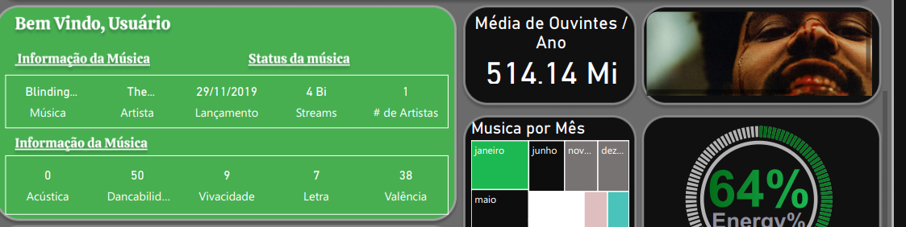
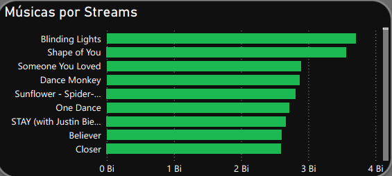
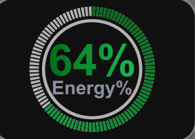
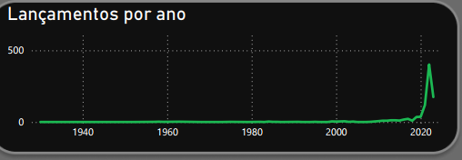

Projeto: Dashboard Spotify - Análise de Tendências Musicais e Engajamento de Audiência
Introdução
Este projeto apresenta um Dashboard analítico do Spotify, focado em explorar as tendências musicais, o engajamento da audiência e as características das músicas mais populares. O principal objetivo foi não apenas visualizar dados, mas também testar e implementar funcionalidades avançadas no Power BI, como a integração com APIs externas e o uso de visuais personalizados (Deneb e HTML Content). O painel visa capacitar entusiastas de música, profissionais da indústria ou analistas de dados a compreender o sucesso de canções, artistas e gêneros, além de analisar padrões de lançamento e atributos sonoros que impulsionam o consumo.
Estrutura do Projeto
O dashboard é concebido para oferecer uma visão multifacetada do universo musical do Spotify, abrangendo:
- Métricas de Audiência: Média de ouvintes por ano e total de streams.
- Ranking de Músicas e Artistas: Identificação das músicas com mais streams e o número total de artistas no dataset.
- Características Sonoras: Análise de atributos como Acústica, Dancabilidade, Vivacidade, Letra, Valência e o percentual de Energia da música.
- Padrões de Lançamento: Distribuição de lançamentos ao longo dos anos e por mês.
- Detalhes de Músicas Específicas: Informações como data de lançamento de hits e total de streams.
Tecnologias Utilizadas
Para a construção deste dashboard analítico e tecnicamente avançado, as ferramentas empregadas foram:
- Power BI: Para a modelagem de dados, criação de medidas DAX e construção dos visuais interativos. Serviu como a plataforma central para orquestrar todas as análises.
- Figma: A prototipação e o design do dashboard foram feitos com o Figma, garantindo uma experiência de usuário intuitiva e visualmente atraente.
- Python: Utilizado para enriquecer o dataset, acessando a API do Spotify para obter URLs das capas dos álbuns.
- Spotify API: Acessada via Python para coletar informações adicionais (URLs de capas de álbuns) que não estavam disponíveis no dataset original.
- HTML Visuals (HTML Content): Um visual personalizado do Power BI utilizado para renderizar as capas dos álbuns diretamente no dashboard, a partir das URLs obtidas via API.
- DENEB (Visual Personalizado): Um visual avançado do Power BI que permite criar gráficos personalizados utilizando as especificações do Vega e Vega-Lite. Foi empregado para a visualização do percentual de Energia da música, oferecendo um controle granular sobre o design gráfico.
- Adobe Color Palette: Utilizado para definir o tema de cores do dashboard, alinhando-o visualmente com a identidade da marca Spotify.
Processo de ETL (Extração, Transformação e Carregamento)
O processo de ETL para o Dashboard Spotify foi particularmente interessante devido à etapa de enriquecimento de dados:
- Extração: O dataset principal foi baixado do Kaggle, proveniente de “Top Spotify Songs 2023” (
https://www.kaggle.com/datasets/nelgiriyewithana/top-spotify-songs-2023?resource=download). - Enriquecimento (Python & API): Antes de importar para o Power BI, o dataset foi incrementado utilizando um script Python. Este script, desenvolvido acessou a API do Spotify para coletar as URLs das imagens de capa de cada álbum, adicionando-as como uma nova coluna ao dataset. Esta etapa foi fundamental para o aspecto visual do dashboard.
- Transformação: No Power Query, parte integrante do Power BI, foi realizada a transformação necessária para consolidar as informações de data. O dataset possuía colunas separadas para data de lançamento, mês de lançamento e ano de lançamento. Foi criada uma nova coluna calculada que combinou essas três informações em um formato de data único, facilitando análises de inteligência de tempo e navegação.
- Modelagem e Medidas DAX: Dentro do Power BI, a modelagem de dados foi realizada para estruturar o dataset e medidas DAX foram criadas para calcular métricas como a média de ouvintes por ano, streams por música, e outras análises que compõem o dashboard.
- Carregamento: Após todas as etapas de extração, enriquecimento e transformação, os dados foram carregados no modelo de dados do Power BI, estando prontos para alimentar todos os visuais do dashboard.
Dashboard
O dashboard apresenta um design moderno e alinhado à identidade visual do Spotify, concebido no Figma e implementado com refinamento no Power BI. Os visuais são claros e objetivos, combinando cards de KPIs, gráficos de barras para rankings, um visual Deneb personalizado para a “Energia%” da música, e o destaque inovador das capas dos álbuns renderizadas via HTML Content. A interatividade permite que o usuário explore as músicas por artista, ano ou características específicas, proporcionando uma experiência imersiva na análise de dados musicais.

Insights
A análise dos dados apresentados no Dashboard Spotify revelou insights importantes sobre as tendências e o consumo de música:
- Engajamento da Audiência:
- A Média de Ouvintes por Ano é de 514,14 Milhões, um número impressionante que reflete a vasta base de usuários da plataforma e o consumo massivo de música.
- O dashboard destaca que o total de streams para as músicas pode chegar a 4 Bilhões, demonstrando o alcance e a popularidade das faixas mais tocadas.

- Top Músicas por Streams:
- O painel identifica as músicas de maior sucesso em termos de streams, como “Blinding Lights”, “Shape of You”, “Someone You Loved”, “Dance Monkey”, “Sunflower - Spider-…”, “One Dance”, “STAY (with Justin Bieber)”, “Believer”, e “Closer”. Estas são as faixas que dominam as paradas e capturam a atenção de bilhões de ouvintes.
- A visualização do “Música por Streams” indica a distribuição de streams entre as faixas, variando de 0 Bilhão a 4 Bilhões, evidenciando o poder dos grandes hits.

- Diversidade de Artistas:
- O dataset abrange um total de 38 Artistas, indicando a variedade de talentos representados nas músicas mais populares.
- Características Sonoras das Músicas:
- O dashboard explora dimensões como Acústica, Dancabilidade, Vivacidade, Letra** e Valência, fornecendo uma compreensão sobre os atributos que tornam as músicas populares.
- Um destaque técnico é a visualização da “Energy%” (64%), que indica o nível de energia e intensidade percebida na música. Este visual, construído com
Deneb, oferece uma forma criativa e eficaz de representar uma métrica específica.

- Padrões de Lançamento ao Longo do Tempo:
- A análise de “Lançamentos por Ano” mostra a distribuição de músicas lançadas desde 1940 até 2020, com um pico significativo de lançamentos em anos mais recentes, atingindo 500 lançamentos por ano no período mais ativo.
- A visualização de “Música por Mês” detalha a distribuição de lançamentos ou de músicas mais tocadas por mês (Janeiro, Junho, Maio, Outubro, Novembro, Dezembro, Abril, Março, Julho, Agosto), permitindo identificar sazonalidades na indústria musical.

Considerações
O dashboard Spotify não apenas fornece insights valiosos sobre o consumo de música, mas também serve como uma prova das capacidades avançadas do Power BI e da integração de diversas ferramentas. A partir dos insights e do processo de desenvolvimento, algumas considerações importantes surgem:
- Desafio Técnico Superado: A integração com a API do Spotify via Python para o script demonstra uma habilidade em conectar e enriquecer dados de fontes externas de forma automatizada e inteligente.
- Visualização Avançada: A implementação de visuais HTML para capas de álbuns e o uso do Deneb para a “Energia%” da música elevam o nível de profissionalismo e imersão do dashboard, destacando a capacidade de ir além dos visuais padrão do Power BI.
Conclusão
Este projeto representa uma fusão de análise de dados, programação e design, capacitando o entendimento do cenário musical digital e solidificando as habilidades em criar soluções de BI.